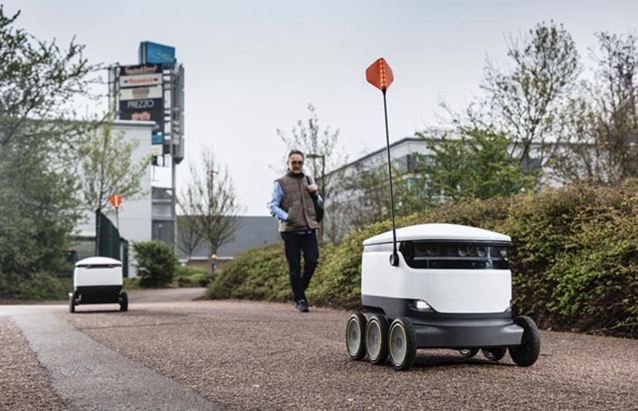

What Can A Starship Do?
Summary
This project aims to create a Library/Textbook Delivery System for college students who face challenges with textbook accessibility. By adapting food delivery insulation systems, the project seeks to provide a secure and efficient way to deliver textbooks, addressing issues like long wait times, limited availability, and inconvenience.
Project Goals
Target Audiance
- College students who depend on library textbooks but struggle with accessibility.
Problems Faced
- Long wait times at the library
- Limited availability of books
- Inconvenience of physically picking up or returning textbooks
- Difficulty in tracking book availability
List Of Methods We Used
Design Space & Research Insights
- Adaptation of food delivery insulation systems for book delivery
- Moisture protection, firm compartments, hard-shell cases, and automated lockers
Research Insights
- 2023 study: 70% of students prefer digital reservations or delivery
- Survey of 500+ college students: 75% would use a textbook delivery service
- Automated book lockers increased textbook accessibility by 40%
User Feedback
- Limited storage capacity
- Uncertainty about disability access
- Concerns of theft
Refinements
- Touch screen for ease of use
- Larger container for multiple orders
- Locks to prevent theft
Key Findings
Research
- Automated robots face issues like theft, environmental concerns, and worker-related problems
- Aerial drones are faster but have safety and noise issues
Scenarios and Storyboards
- Medicine delivery: beneficial but faces security and legal challenges
- Book delivery: useful but has return strategy and timing issues
- Mail delivery: good idea but faces accuracy and safety concerns
User Evaluation Results
- Users found the service useful, especially for book availability and ease of return
- Feedback for improvements: larger container, more touchscreen functionalities
Personal Contributions
Article Selection
- Chose an article comparing flying and ground vehicles, learning about their efficiency and theft issues.
Scenarios and Storyboards
- Analyzed multiple perspectives for medicine, books, and mail delivery.
Sketches
- Developed base designs and refined them with features like increased security, touch screen, and book dividers.
Final Design and Design Rationale
- Created a comprehensive design for buying, borrowing, and returning books with enhanced security and usability features.
Overview of Process
- Conducted interviews, implemented scenarios and storyboards, sketched ideas, tested with users, and made final tweaks.